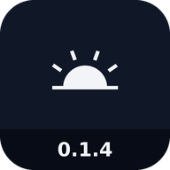
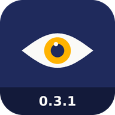
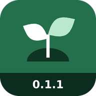
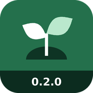
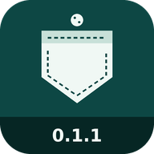
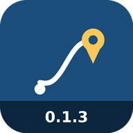
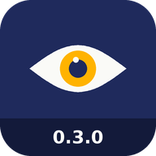

kaji apps
Current Android APKs, with versioned downloads and status. Check the SHA-256 after downloading. Status as of 2026-11-20 15:09 WIB. Previous builds are listed separately below.
Choose an app
Available now
kokok 0.2.0
Optional phone-based estimated sleep, off by default, requires Android10+ and compatible Google Play services. No REM, stages or medical claim; no microphone, camera, location permission or automatic alarm-time changes. Sleep records stay private; explicit clipboard summary only. Exact signed0.1.4 upgrades passed syntheticAPI34 tests for both chosen and default sound, cold pre-unlock ringing, preserved pairing/keys/alarms/sound and old-code rollback compatibility. Physical-phone overnight reliability and provider accuracy remain unverified. Keep an independent backup alarm. Update in place, do not uninstall or clear data.
SHA-256 8550ba9651f5ee2bbd5ed08c893d8121a4331f33bf196648b1c879d631a60ce5sanggup 0.1.4
25 tiles in a5x5 grid retain all paths through seven approved groupings, with Career moves, Business frameworks, shared-skill labels and deeper stages. Actual signed grid inspected.Signed0.1.3-to0.1.4 synthetic upgrade retention and post-publication checks passed; not yet user-delivered. Marketing is not included and further lessons remain in progress. Zero Android permissions. Browser and Android progress stay separate. Widget intermittency has no proven cause; physical-phone behavior remains unverified. Learning progress is not qualification or income proof. Update in place, do not uninstall or clear data.
SHA-256 a4ddc6b131f874329ad309ebee1e9cda0ba550ad39ae97187a48ac6453c6d4fetengok 0.3.2
Finger-sized piano keys with automatic panning and sideways look-around drag, local recent files and a live/final game rank. Recent-file removal clears only the list, not the file; access-lost handling was inspected. Offline, zero Android permissions, no automatic file or diagnostic uploads. Published0.3.1-to0.3.2 synthetic upgrade retained a remembered folder and its Android grant via the real picker. Published piano width/panning/non-striking drag checks passed. Full published suite is being rerun after a test-log accounting fix; not yet user-delivered. Physical-phone and USB keyboard behavior remain unverified. Read-only folder explorer and existing MIDI/image/audio/text/hex limits remain; other viewer formats are not included.
SHA-256 e13e258e1bbe4bcd4922d909dba732a5ed98ad2791b1029a026b76c6148a8db5unggun 0.1.4
Lowercase name and matching version strips shown on Samsung, bonfire retained. Same signer/package, higher version; update in place, do not uninstall. Signed0.1.3 to0.1.4 retained two synthetic imported app records on API34, not every possible setting or real user record. Prior rate-limit synthetic checks remain; no live-isolate runtime proof or early cooldown clearing.
SHA-256 bdda07dd6b271ab20a707edd9edfb6f777a717083ccec5ea728cfe6e958665c0tuju 0.1.9
Shared10/7F station areas drawn once with opposite arrows and branches for distinct stops. Shared4/6 spine and7E direction-specific stops retained. Actual APK icon badges corrected to0.1.9. Emulator checked, not physical Samsung-tested. Existing fare/access,7F hours and Gojek uncertainties retained.
SHA-256 0e02a180fb6c5d6fd4515028046de073b421618b799ecf15591e3f71a2f2e5cdirvan 0.1.0
Interactive introduction and project map with reviewed content, paper credits and source links. Website and Android build available; not verified on a physical phone.
SHA-256 fd2d07903dee74e4ff976f1bf34918df9190429a2879cb3d3d71d2a161b3b093kemas 0.3.2
Readable zone/progress at2-3columns; before/after photos remain in wider/taller layouts. Responsive bitmap budget fixed to avoid receiver crash. Emulator-qualified, not Samsung-tested; package, signer and data preserved.
SHA-256 a3d8dcfb94eb2002149ffb20188f4463bf54218e2295c286cdd6601759d5c987cabang 0.3.2
Threaded, collapsible view for Delta Chat conversations.
SHA-256 a9e20a98448c82d8db87299c7cee791a191de037426d452e9627f7d25aaa254amenit 0.2.2
Phone-usage totals with readable stacked compact time and percentage. Useful 2-3-column content and tap-open checked in emulator, not physical Samsung. Same package, signer and permissions.
SHA-256 b78d11a8b130487fd7c50fc7ab7711e8b8ec280ec0d49538c31049a005451c52jin 0.5.2
Clarifies that the publish button and confirmation publish a new mini app (.xdc) version to chats, not a Jin app update. Square buttons retained. Host tests and supplied render checked; real-device validation remains pending. Two-way Bidik integration is separate and not built.
SHA-256 d518a324760c39e65575ee161431cae0107385c7e0625cb4098ae80f4253569aunggah 1.1.3
Pushes a ZIP to a chosen GitHub repository over SSH. Maintenance update: app version, numeric release tag, APK filename and launcher badge agree. Same com.vanipy.unggah package and release signer; update in place without uninstalling or clearing data. No feature changes or new physical-device runtime claim.
SHA-256 af5271a7ddc57e55d9a4781bd81bc75add4211243dd99dfe40f24683b21eb547sapa 0.5.8
Helper for event moderators: counts people on camera, counts raised hands per question round and picks a random person.
SHA-256 e956f3c5b6c7b85597c2fc6832c448d792d1ba8f0f9ac5f89b9c5dc516fc04a7onda 0.2.2
On-device sensors and small-model demos for Android, built for an Edge AI talk.
SHA-256 b3e6465a55c50ae9cfcc5191ba8613908c9b029e9f654d5e3202f1759caf3276bidik 0.1.4
Delayed start, auto-stop, status/navigation-bar crop and looping-GIF export with manual trim fallback. Main controls stay on the home screen, other actions in a left drawer. Emulator recording tests passed; physical Samsung A24 capture behavior is unverified. Loop quality depends on the clip; no perfect-loop guarantee. Jin client is inert, no cross-app message flow.
SHA-256 a7e126570a8ec8fdf75b49cf4cdc52aa23a9924e5ce2b69ea2e9e430ea2d6966denyut 0.7.3
Offline notes and reminders. Narrow widgets show a complete countdown and clock on separate lines, retaining notes count. Font-aware compact fallback preserves time and notes; long one-row titles may shorten. Emulator host, render and tap-open checks passed. Narrow layout checked on Samsung; other spans and tap behavior are not universally phone-proven. Same package, signer, permissions and data. Local-model loading remains disabled. Source: fcd23d1.
SHA-256 bfbc3754be450340077380c6a0fcc50a93f749abafc535f8941be78fc3362b73saku 0.1.3
Experimental local vault for dummy data only, not real passwords. Useful static locked-status strip and quick-open at 2-3 columns, qualified in an emulator. No real vault-state proof. DeltaChat sync is unfinished and excluded from this release. Not tested on Samsung.
SHA-256 911838f37da487df056abbee06591775759cbfcaea16730cbba3189c87e0ecf7tumbuh 0.2.2
Offline manual commitments, inbox, space and people. Useful title and first step at2-3columns, full details larger. Emulator-qualified, not Samsung-tested. No inbox/contact access or automated sending.
SHA-256 41a33407189ef2a7a81acd79373939f3a6cf07a91930dc299871b55831df6bcdintodo 0.5.18
Separate real and synthetic Demo feeds with independent saved items and freshness. One-time setup retains the existing key. Real/Demo app and widget layouts checked on Samsung. Automated tests passed; this does not prove every race/cache edge.
SHA-256 796da494130d2fe4769674f339068276cd070650762da05d05fb2bbf372a61e7nada 0.1.2
Deterministic recipe-to-MIDI generator, not a conversational composing workshop. Signed Android release loaded and saved through its real UI in an emulator. Physical-phone behavior remains unverified. Supersedes 0.1.1; the production test-save trigger is removed.
SHA-256 1081313eadbdb0b942e8ff4f333f40597ea58f3d65fc97663899987507233a6atagih 0.1.0
Offline invoice tracker with due dates, manually recorded payments, recoverable archive and JSON/CSV exports. No permissions, bank connection or payment processing. Synthetic emulator lifecycle checked create, sent, partial/full payments, paid, archive/restore and CSV contents; physical-phone behavior remains unverified.
SHA-256 168e60b8c362572d4558d06f22cc9101aa5b4099e9f16a24fd67f72c9fc2d0b0sambung 0.1.0
Offline request briefs, clipboard/share handoff, reply-shape checks and local history. You carry the text to an assistant and review the result before sharing it back. No network permission, provider account connection, API key, subscription access or automatic result application. Physical-phone behavior remains unverified.
SHA-256 4eda63a9b158916b0b6d714f59fe636467111d575fc3059f4b735b9b76a7d59dPrevious builds

kokok 0.1.4
Preview the current alarm sound for up to 10 seconds, choose a device alarm sound for kokok only, or return to the phone default. Default unchanged until an explicit choice; no system-volume change. Existing keys and alarm records retained. Experimental alarm delivery and local scheduling are not a guarantee of exact timing or reliability across every device state. Keep an independent backup for important wake-ups.
SHA-256 1d2e94f5f1be0ee2365cc2a87061faac874c75cd08ceffc40ec4f62ce0164f26sanggup 0.1.3
30 offline skill paths in a5x6 grid. Signed0.1.2-to0.1.3 synthetic upgrade retention passed. Browser and Android progress stay separate. Widget checks include intermittent failures with cause unproven; physical-phone behavior remains unverified. Newer25-tile grouping is in0.1.4, not these bytes.
SHA-256 fa468f7d4bc98adc2030d30d2c913586a621c4faccfc2346ba5888a6d32de3bd
tengok 0.3.1
MIDI game with late-note hints, jump, draggable clock timeline, played notes leaving the lane, a fresh round at the end and speed-adjusted scoring. Read-only chosen-folder explorer and MIDI, image, audio, text and hex views retain their format limits; no delete, rename or move. Published-APK emulator checks passed for real folder access and game runtime. Physical-phone and USB keyboard behavior remain unverified. Diagnostics stay local and are shared manually, never uploaded automatically.
SHA-256 44ed694f028b89ec72678abd0c5ad301023941829d98c0aa641154e6fe8bc52csanggup 0.1.2
25 offline starter paths with a5x5 app grid, including Content creator and expanded Community building. Signed0.1.1-to0.1.2 upgrade retained synthetic progress/streak; post-publication checks passed. Widget tests include passes and intermittent failures under investigation, cause unproven. Physical-phone behavior unverified. Browser/Android progress stays separate, not competency or income proof. Newer web content is separate from these APK bytes.
SHA-256 4aef2e08c86674ffd8204789520a82364cb970313abfab0a9396df944a101240intodo 0.5.13
Home-screen widget and app for reminders and todo lists, with shared lists over Delta Chat. Experimental build.
SHA-256 f01e87543ff14c4ac403334467f7e03d86d5e09b400fcb2bbdee39d099911ff1menit 0.1.2
Estimates how much phone time goes to AI apps.
SHA-256 cad39add8845556af277845453e1eaafb8b787e17d51162d1900bcf2cff07f6f
tumbuh 0.1.1
Sorts commitments, inbox, space and people you lost touch with. Entries are added by hand. Offline, no permissions, no reminders, no inbox or contact access, nothing is sent. Drafts are text you send yourself. Tested on an Android emulator with synthetic data, not on a real phone. AGPL-3.0.
SHA-256 8f733d2ca26e3511e70debbfa0ca11387b9fc793d9bf0d94223c294cfc77559adenyut 0.6.5
Notes and reminders can work offline without a model. Local-model loading is disabled in this build; no model was loaded and no chat account was provisioned for qualification.
SHA-256 334430b0146e9dc79a46c3ed416c5f9978ebf6a79cd6ee0a4465ad0f9c29190fkemas 0.2.3
Cleaning accountability app. Experimental test build.
SHA-256 971f941af9bd818aa86a17a25df025ea2faba68baa17aa9301785859f23de575menit 0.2.0
Phone-usage totals and a resizable home-screen widget. This older build predates the all-sizes compact revision. Emulator checks are not proof on a physical Samsung.
SHA-256 4272e681d30199936640c9c371cd08be7de1c868bd9eaa5f920995707a1066c0
tumbuh 0.2.0
Offline manual commitments, inbox, space and people, with a home-screen widget. No inbox/contact access or automated sending. This delivered build predates the pending compact revision; not phone-tested.
SHA-256 169abc095777deb8240087f97c8d84312016e72473125debe610e259b8d1ed5adenyut 0.7.0
Offline notes and reminders with a home-screen widget. Local-model loading remains disabled. This delivered build predates the pending compact revision; no model/chat account provisioned or phone proof.
SHA-256 07d2c5bf351035593880198ad2121b8a0159ae3bb47b268d767306ddedd2e0aakemas 0.3.0
Cleaning accountability with a home-screen widget. This delivered build predates the pending compact and expanded-mode correction. Not phone-tested.
SHA-256 482a4f8c46161f038db9b521aa51acc8d562492640afb6729b08d1526e450616
saku 0.1.1
Synthetic entries only. Not for real passwords, accounts or keys; no real vault, network, sync or Autofill. Development checkpoint; license selection is pending. Full suite: 13 tests, one known failure, KdbxSpikeTest.readsPykeepassRoundtrip.
SHA-256 cad32905084c22ad7f87beca20aaf1012085dcf6eeb08253eaba437380c4918dintodo 0.5.14
App and widget for reminders and todo lists. Same com.vanipy.intodo package, signer, data and paired feed. Widget tap routing checked on an emulator; post-tap content rendering remains unverified and was explicitly bypassed. Not Samsung-tested.
SHA-256 392c257e7e862038863d5f90076269d2d480a11993772dd7f1f809ea8bdd7c1dtuju 0.1.0
Bundled busway overview map with pinch-to-zoom and drag-to-pan. Offline map only: no live directions, journey planning, fare calculation or service updates. Direction qualifiers and fare uncertainties stay visible. No permissions. Released APK not installed on a physical phone.
SHA-256 3e466703b4ab3ff7aeb9579025a5a55bde21795e987743da86294ca5d76c8cc3intodo 0.5.16
Current names and update outputs use intodo only. Same package, signer, feed and list data. Old download compatibility dropped. Rename-only: useful 2-3-column widget content correction is in progress. Post-tap content rendering and physical Samsung behavior remain unverified.
SHA-256 687908c23385118c762ee684bb4c9b9c93cededc11d3f1f7ce89afa6cd837c4amenit 0.2.1
Phone-usage totals and responsive compact widgets. Existing package, signer and permissions retained; emulator qualification is not Samsung install proof. Useful 2-3-column widget content correction is in progress.
SHA-256 b5576b2cc24f3cbe387a9a2e57f03f9fa0acd5c2a6df3fc330276a7a9282931ctumbuh 0.2.1
Offline manual commitments, inbox, space and people, with responsive compact widgets. No inbox/contact access or automated sending. Not verified on a physical Samsung. Useful 2-3-column widget content correction is in progress.
SHA-256 461f7d2d168eb906e3fd3a5df6d6e15e5d9a91d8b84314da05eef7693e82af1ddenyut 0.7.1
Offline notes and reminders with responsive compact widgets. Local-model loading remains disabled; no model/chat account provisioned or Samsung install proof. Useful 2-3-column widget content correction is in progress.
SHA-256 8ffada80af5e09d750f54e9223275f0970cd1d0e21c1a7bbdc81143644f39f4bkemas 0.3.1
Cleaning accountability with responsive compact and expanded widget modes. Existing package and signer retained; not verified on a physical Samsung. Useful 2-3-column widget content correction is in progress.
SHA-256 1b078b263a31313458211d9b52f6660448c869bf5d8e48de1dd79b2a3dd6dcfdsaku 0.1.2
Not for real passwords, accounts or keys. Static locked-status widget and quick-open only. Experimental local vault with a known KdbxSpikeTest.readsPykeepassRoundtrip interop failure; not all tests pass. DeltaChat sync is unfinished. No production-safety or physical-phone claim. Useful 2-3-column widget content correction is in progress.
SHA-256 32ded85de300b2f567f06f5deb13eeef769c4d479d651c8adb7a3152b16420dfdenyut 0.7.2
Offline notes and reminders. Useful next reminder and note count at2-3columns. Emulator-qualified, not Samsung-tested. Local-model loading remains disabled; no chat account provisioned by this update.
SHA-256 e2116950649596b21ea4f67b7882de661067ceaaad3bbd7d0d7f689431aaa577tuju 0.1.1
Offline busway map with all selected outbound intermediate stations from an operator GTFS snapshot, pinch-to-zoom and drag-to-pan. Existing direction, transfer and fare caveats remain. No live bus guarantee or physical Samsung proof. Same package/signer, no permissions.
SHA-256 d422952ef3ad3fdbdbcd23be8df81c69c644c3853bea8342d92e57871e6df6b9tuju 0.1.2
Offline corrected overview and closeup. Gabus stays far-side beyond bridge and venue; Phe is beside the venue. APK map matches source 311cd12. Same package/signer, no permissions; not physically phone-proven. Website fare notes are newer: this 0.1.2 APK still contains the earlier uncertainty wording.
SHA-256 144ae3a119a05887f049e9a633ac2624bd8fc03fd00ece1740f5a6988f741bdbintodo 0.5.17
Useful list rows at 2-3columns; repeated same-widget resizing preserves all six synthetic items without Loading rows in Android15 emulator. Same package, signer, feed and list data. Samsung behavior unverified; no reset or feed switch.
SHA-256 e17971ebca35e8dfb12499d3911a23e8000ab627626bc3c84a0cf2a006bc6f99
tuju 0.1.3
Offline corrected maps with fare notes based on firsthand clarification: 4 to 6 has no extra fare; the Flyover link stays inside the paid area with no exit or extra fare; 6 to 7E requires an exit, very short walk and payment again. Not independent operator-policy verification. Geometry unchanged. Same package/signer, no permissions. Emulator-tested, not Samsung-proven.
SHA-256 7e5eab7a23f3865e1d858ed346cd3f94816385efbe5969ce967e25b560217bdftuju 0.1.4
Plaza Festival added to the offline map. Routes 4 and 4D share one first-ten-stop trunk through Halimun, then 4D branches to Rasuna Said. Prior firsthand fare notes preserved. Same-source debug Android WebView checked on an emulator; signed APK not phone-tested. Same package/signer, no permissions.
SHA-256 80cb319a1ab9744e65c1de7bb096eab35585e2b8deeef2195f11e1c484e12182tuju 0.1.5
Both Arkadia return options are now drawn in the offline map: Arkadia-side 7E to Ragunan, 6 to Galunggung, 4 to Simpang Pramuka 1; or far-side Gojek to Flyover Raya Bogor, 7F to Kayu Putih Rawasari. Outbound routes, shared4/4D trunk, destinations and fares retained. Same-source debug Android emulator passed; not Samsung-tested. Ragunan access/fare continuity, differing7F hours and Gojek fare/time remain unverified.
SHA-256 5c08de849e0a72fe13fcd4fbb8869e0a60ebc274bf9dea7a1cbadbfb24e6cf53tuju 0.1.6
Current0.1.6 release puts outbound and returns on one canvas, but shared4/6/7E sections are still separate verticals. A single shared-spine correction is in progress. Emulator pinch/drag passed; not physical Samsung-tested. Ragunan access/fare continuity, conflicting7F hours and Gojek fare/time remain unverified.
SHA-256 a79fede35f44953af1b8349a5abdabdb9abc20aaef90dd074303eb4a24dfd0cdunggah 1.1.2
Pushes a ZIP to a chosen GitHub repository over SSH. New com.vanipy.unggah identity installs separately from the previous app. Existing settings are untouched; backup/import settings and set up a new SSH key as needed.
SHA-256 3b6a25c03e4423c52a52da5500645b6402efc80a5d6c56c1e0fd5616ff23132d
tengok 0.3.0
MIDI falling-note game, on-screen piano and USB MIDI input, plus a read-only folder explorer for a folder you choose. No delete, rename or move. Existing MIDI, image, audio, text and hex views retain their format limits. Emulator UI and function checks passed; real USB keyboard behavior and version 0.3.0 on a physical phone remain unverified. Diagnostics stay local and are shared manually, never uploaded automatically. Packaged launcher icon reads 0.3.0.
SHA-256 d47a2fb2709166da1959a07c233bba770b4cc2e7b47ea6b133deccf1e6717be4sanggup 0.1.1
20 offline starter paths and animated Sang. Lowercase name/family badge and short widget with clear corner spacing shown on Samsung. Debug host checked animation, practice-to-streak and nominal/minimum/tall sizes. Signed0.1.0 to0.1.1 retained a synthetic1-day streak on API34. Exact launcher grid metadata not measured; browser/Android progress separate, not competency proof.
SHA-256 6d18deac4b7ecc7298ff8655b1b79350495d6e786a5d2cb8a575bec0813465c9